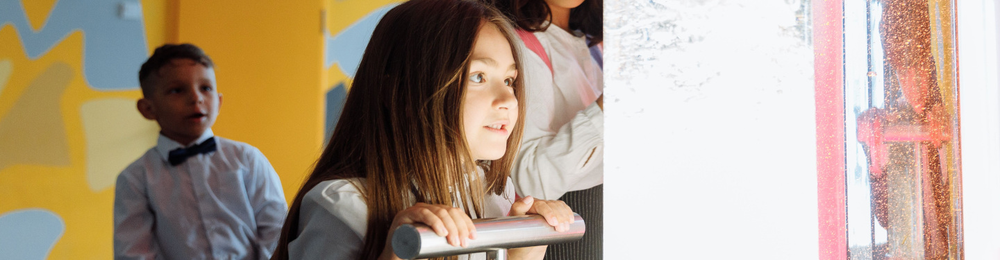
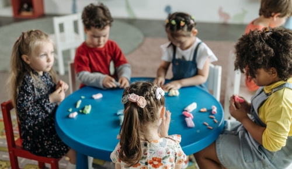
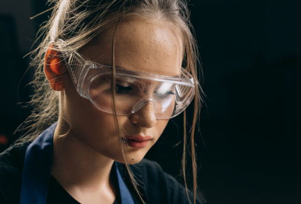
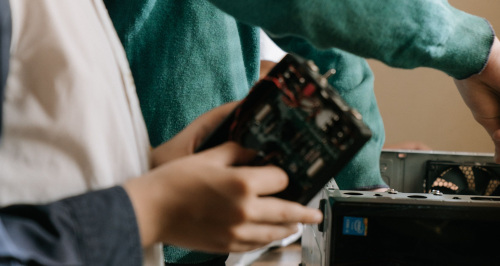

Education
Learning through History, Engineering and Discovery
At the museum, learning comes alive through hands-on experiences, interactive exhibitions, and the fascinating story of Fredrikstad's industrial heritage.
Inspired by the history of Fredrikstad Mekaniske Verksted, our educational programmes encourage pupils to explore how engineering, science, mathematics,
and history have shaped both the local community and the wider world.
All programmes are curriculum-linked and combine guided activities with opportunities for investigation, collaboration, and creative problem-solving.
Visits can be adapted to suit different class sizes and learning objectives.
Read more about all of our different programmes, we have three already adapted and can even customize to your wishes. Contact us for more information.
Why visit us?
A museum visit offers pupils the opportunity to connect classroom learning with authentic local history. Through exploration, experimentation, and collaborative activities,
students develop historical understanding while strengthening their skills in mathematics, science, technology, and problem-solving.
Whether building a model ship, investigating engineering principles, or discovering the stories of the people who built Fredrikstad's maritime legacy, every visit encourages curiosity, creativity,
and a deeper understanding of how the past continues to shape the future.
Years 1-4: Builders and Explorers
Young learners discover the world of shipbuilding
through play, storytelling, and practical activities.
During their visit, pupils investigate why ships float,
explore simple machines used in a shipyard, and learn about
the people who worked at Fredrikstad Mekaniske Verksted.
The focus of learning will be on:
- Local history and community
- Floating and sinking
- Shapes, measurements, and counting


Years 5-7: Engerneering the Industrial City
Pupils explore how Fredrikstad grew into one of
Norway's most important industrial cities.
Through interactive exhibits and experiments, they
investigate ship construction, mechanical engineering,
and the science behind buoyancy and stability.
The focus of learning will be on:
- Industrial history and technological development
- Engineering design processes
- Forces, motion and buoyancy
- Collaboration and critical thinking
Years 8-10: Innovation - From Shipyard to Sustainable Future
Older students examine how industrial innovation has
transformed society from the nineteenth century to today.
By connecting the history of Fredrikstad
Mekaniske Verksted with modern engineering and
sustainability, pupils investigate how technology
continues to solve real-world challenges.
The focus of learning will be on:
- Industrialisation and social change
- Maritime technology and social change
- Energy, forces, and engineering principles
- Mathematical modelling, calculations and design
